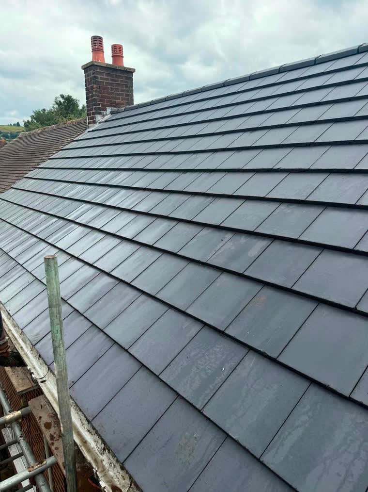

Roofers in Chester
Roofing and building work across Chester and Cheshire, covering Hoole, Handbridge, Upton, Saltney and the surrounding area.
In short
Weather Proof Roofing and Building Services is a roofing and building contractor working across Chester and the wider Cheshire area, including Hoole, Handbridge, Upton, Saltney, Christleton, Vicars Cross. Work covers new roofs and re-roofing, roof repairs, chimney repairs, ridge and verge work, guttering and fascias, and general building work. Call or WhatsApp 07718 155997 for a free quote.
Roofing in Chester
Chester gives a roofer an unusual mix to work on: Georgian and Victorian terraces around the city centre, a large stock of interwar and post-war semis out towards Hoole, Handbridge and Upton, and a conservation area covering much of the historic core. Period property in and around the walls often carries natural slate with lead valleys, where matching the existing covering matters as much as the workmanship.
Whatever is on your roof, the job starts the same way: someone actually looks at it and tells you what is wrong. If a repair will see you right for a few more years, that is what you will be told.
What we do in Chester
All six services are available across Chester and the surrounding area.
New roofs and re-roofing
Full strip and re-cover in slate or tile, with new felt and battens.
Read moreRoof repairs
Slipped tiles, leaks, valleys and flashings put right before they get worse.
Read moreChimney repairs and repointing
Repointing, re-flaunching, new pots and cowls, or a full rebuild.
Read moreRidge and verge work
Ridge tiles re-bedded or dry fixed, and verges made secure against the wind.
Read moreGuttering, fascias and soffits
Gutters, downpipes, fascias and soffits replaced or cleared out.
Read moreBuilding work and brickwork
Brickwork, pointing and general building work by the same team.
Read moreNeed a roofer in Chester?
Call 07718 155997 or send a photo of the problem on WhatsApp for a free, no obligation quote.
Areas we cover around Chester
As well as Chester itself, we work throughout the surrounding towns and villages.
Frequently asked questions
Do you cover Chester?
Yes. Weather Proof Roofing and Building Services covers Chester and the surrounding area, including Hoole, Handbridge, Upton, Saltney. Call or WhatsApp 07718 155997 and we will tell you when we can get to you.
How quickly can you get to Chester?
It depends how busy the week is, but Chester is inside our normal working area so it is not a special trip. Active leaks are prioritised, because water sitting in a ceiling causes far more damage than the fault that let it in. Call 07718 155997 and you will be told honestly when someone can get there.
Do you charge extra to come out to Chester?
No. Chester is within the areas we cover, so there is no separate travel charge on top of the quote.
What roofing work do you do in Chester?
All of it: new roofs and re-roofing, roof repairs and leak tracing, chimney repairs and repointing, ridge and verge work, guttering, fascias and soffits, and general building work such as repointing and brickwork repairs.